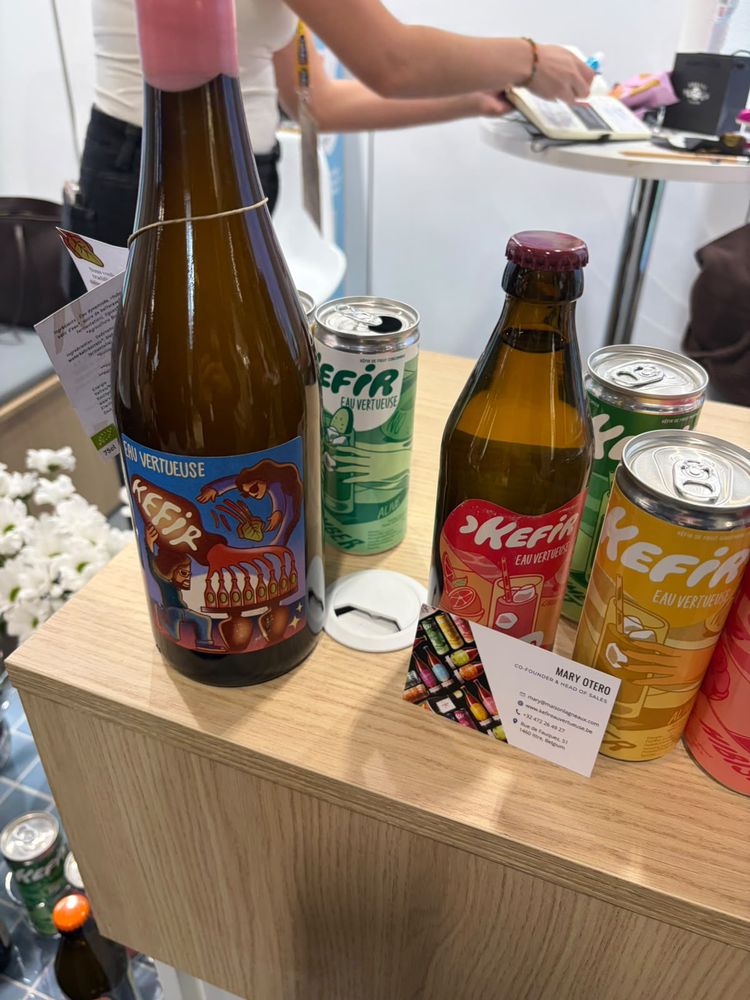
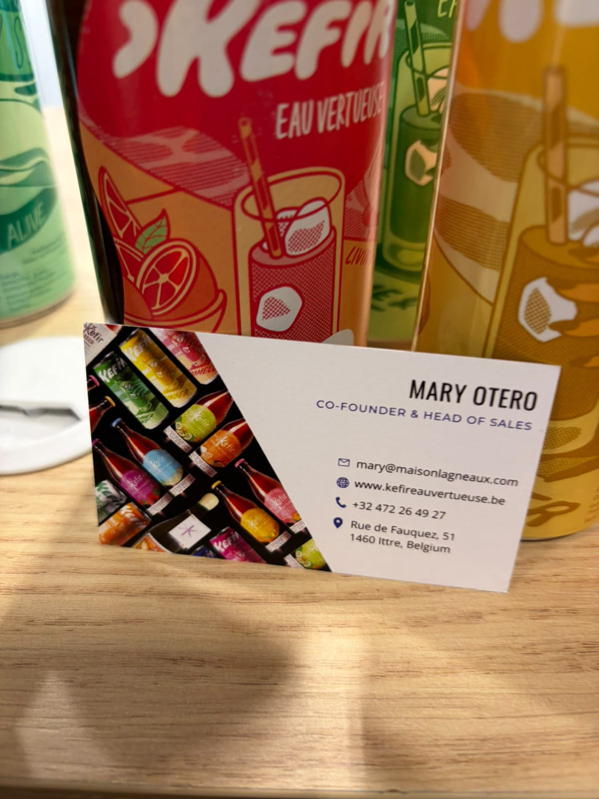
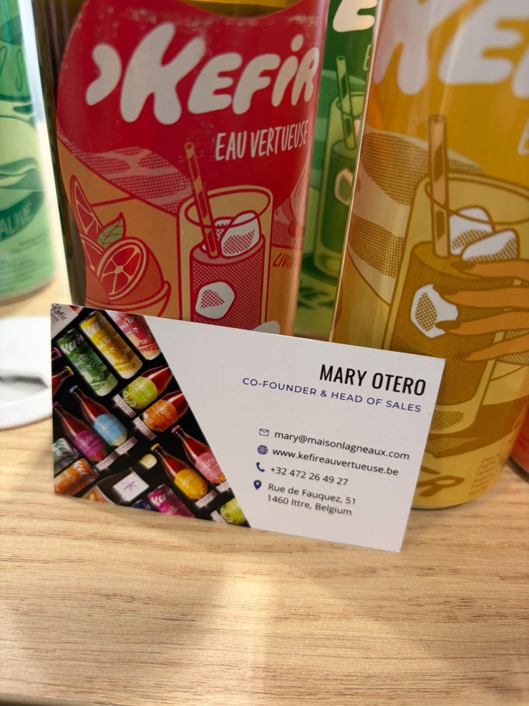
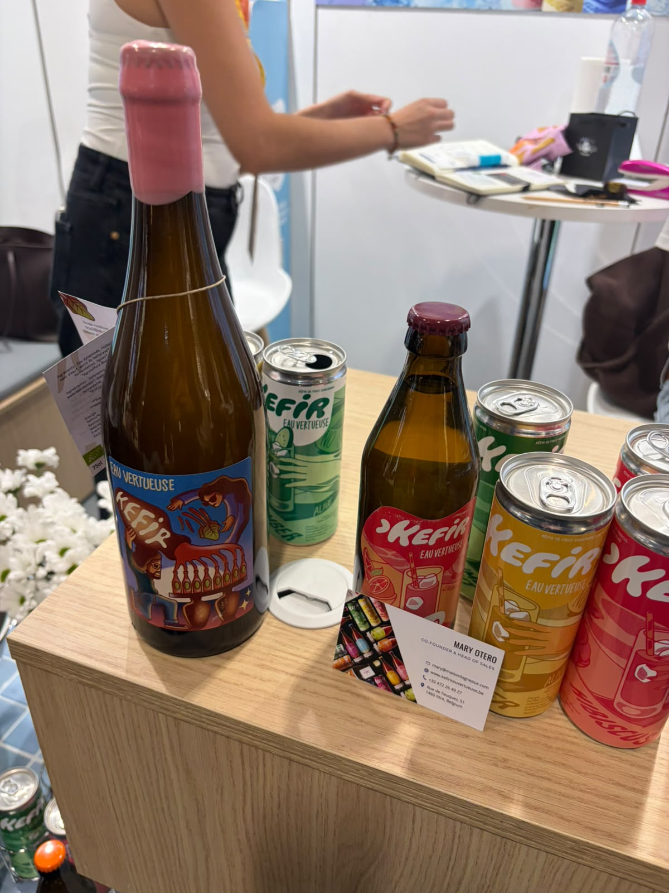
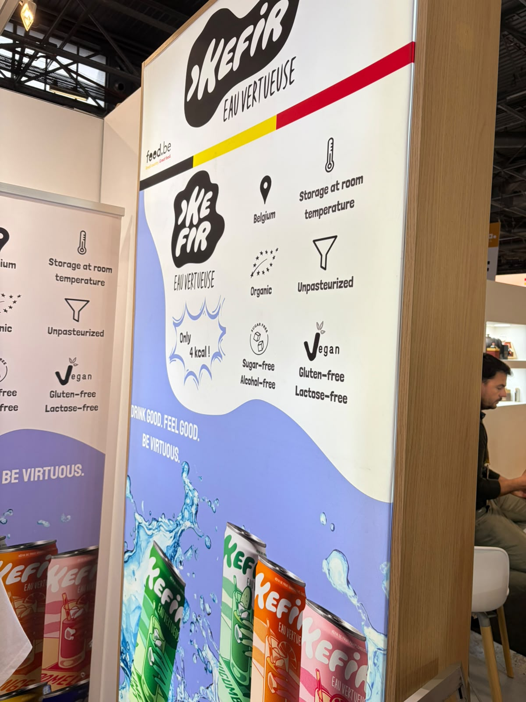

Kefir Eau Vertueuse / Maison Lagneaux
مشروبات كفير مائية
الوكيل الحصري في السعودية
لم يُعثر في البحث العام على دليل موثوق يثبت وجود وكيل حصري لهذه الشركة في السعودية أو ينفيه. لا تُعدّ السوق متاحة حصريًا قبل رد الشركة.
- الجهة
- لم تُثبت جهة سعودية محددة
- نطاق الدليل
- Kefir Eau Vertueuse / Maison Lagneaux
- تاريخ البحث
- 21 أكتوبر 2026
الخطوة التالية: طلب تأكيد مكتوب باسم الوكيل، ونطاق السعودية، والعلامات والأصناف وقنوات البيع، وسريان الحصرية.
المصادر وطريقة التحقق
- الموقع المرجعي للشركة / صفحة التواصل
مرجع للاستفسار المباشر؛ ليس شهادة بعدم وجود وكيل.
بحث باسم الشركة والعلامات مع السعودية والتوزيع والوكالة، ومراجعة المصادر العامة المتاحة. لم يتم التواصل مع الشركة أو الاطلاع على عقد وكالة.
المنتجات والمجال
- مشروبات كفير بنكهات متعددة
- اللوحة تعرض تخزينًا بدرجة حرارة الغرفة، وعضويًا وغير مبستر وخاليًا من السكر والكحول والغلوتين واللاكتوز؛ أوصاف الشركة
بطاقة الملف
الجناح
غير ظاهر في الصور
العنوان
Rue de Fauquez 51, 1460 Ittre, Belgium
حالة المتابعة
بيانات المعرض محفوظة — لم يُعتمد توريد
وسائل التواصل
Mary Otero
Co-Founder & Head of Sales
بطاقة مصورة ضمن دفعة المستخدم المستلمة في 21 أكتوبر 2026
ملاحظات الملف
علامة مستقلة عن ملفات الكفير الأخرى المحفوظة.
أوصاف المنتجات والفوائد الواردة على العبوات منسوبة للمصنع، وليست تقييمًا طبيًا أو اعتمادًا للتوريد.
الصور وبطاقات الأعمال
اضغط على الصورة لفتح الأصل بالحجم الكامل.









